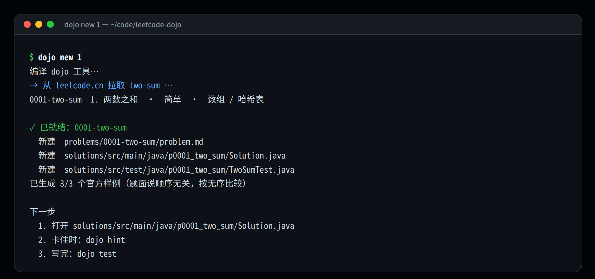
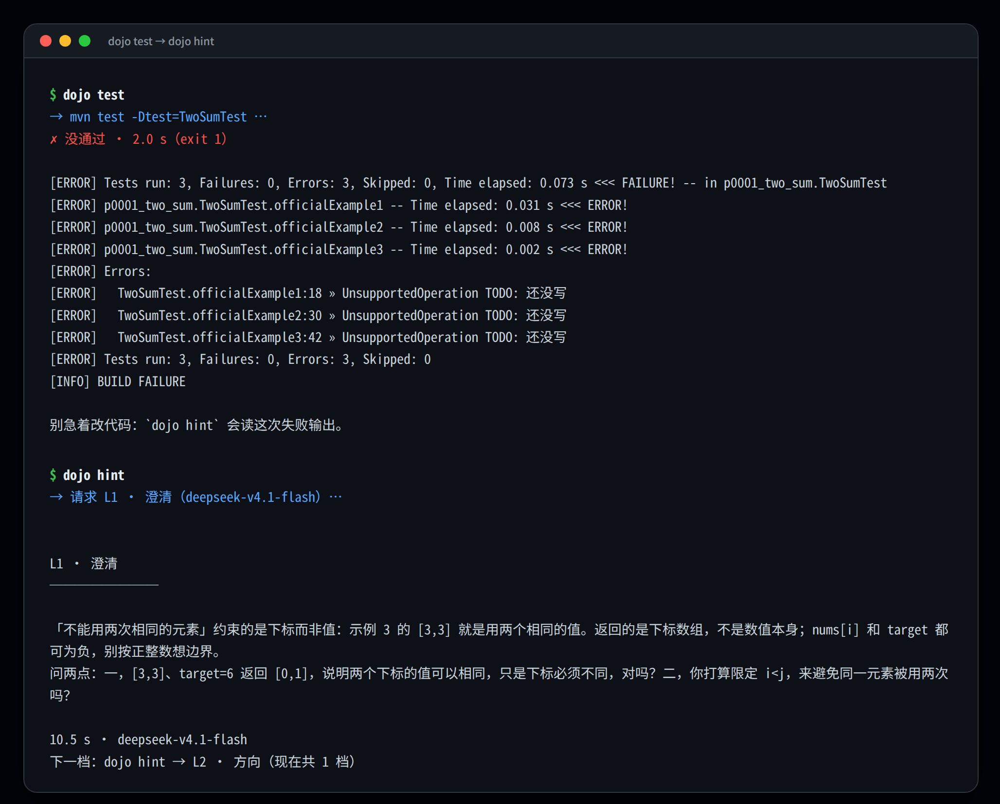
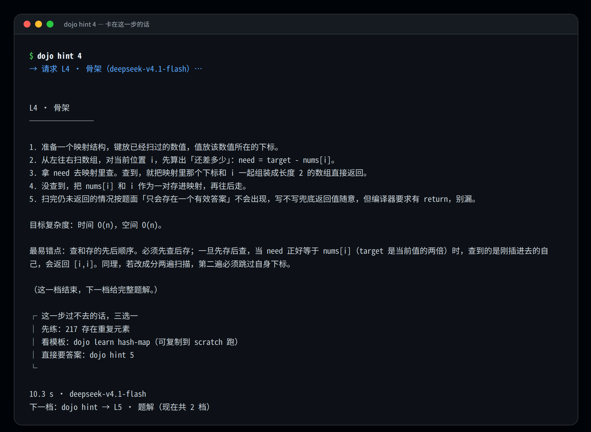
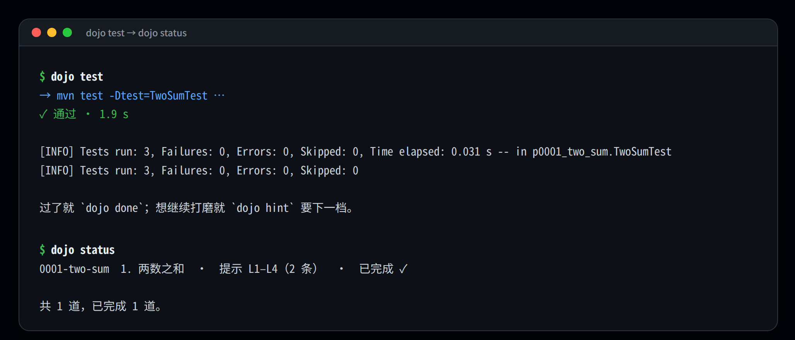

Java 21 · Maven · 零运行时依赖
卡住的时候，
给你下一档提示
不是答案，也不是鸡汤。在 IDEA 里刷 LeetCode：题面、代码、测试、提示，都在一个普通 Maven 工程里。按 L1–L5 五档，一次只推进一格。
01 / 为什么会有这个东西
把外围删了，只留一条主线：
把提示做准
上一版是一个带 Web 页面、数据库、爬虫、星级和设置页的刷题平台。功能齐全，但卡住的人拿到的经常是一段正确但没用的废话。这一版只保留一条主线。
一次调用
模型同时看到题面、你磁盘上的真实代码（带行号）、最近一次测试输出、已经给过的提示，一次给出下一档。
没有「诊断器 → 引导器」的二次转述损耗。
阶梯是真的阶梯
L1 只问边界，L2 只指方向，L3 给一个洞察，L4 给步骤骨架，L5 才是完整题解。
想直接要答案就 dojo hint 5，默认永远只推进一格。
不重复，也不装死
已给的提示原样进上下文，一句都不许重复，且必须承接上一档；越界给代码或超长会被自动重问。
仍然不行就原文照发 + 一行警示，绝不偷偷换成罐头文案。
| 常见做法 | dojo | |
|---|---|---|
| 提示形态 | 一问一答，直接给思路或代码 | 五档阶梯，每次只给下一档，越级要显式要 |
| 上下文 | 题面 + 你粘进网页的代码 | 题面 + 磁盘上的真实文件（带行号）+ 最近一次 JUnit 输出 |
| 写题环境 | 网页 / 插件面板 / 独立编辑器 | 你自己的 IDEA + 一个普通 Maven 模块 |
| 数据 | 云端账号、数据库 | 纯文件：problem.md、hints.md、done |
| 卡住的原因 | 一律当「不会做」 | 编译错 / 抛异常 / 断言挂 / 思路没到，走不同分支 |
| 样例过了 | 默认你会了 | dojo stress 随机对拍，出错给 seed 复现 |
| 看懂了 | 没有下一步 | dojo fade 挖空 3–5 行，补完再跑测试 |
| 效果 | 「感觉挺准」 | eval/ 20 题 × 3 架构 × 5 档，指标可复算 |
02 / 五档阶梯
每一档，只给你现在
用得上的那一点
档位状态不存数据库：数 hints.md 里有多少个 ## L3 · 洞察 小节，就知道你走到哪了。删掉最后一节就等于退回上一档，手改也认。
澄清
1–2 个能一句话回答的问题：边界、返回约定、你的代码与题面的偏差。
给什么
只给问题，不给方向暗示。
篇幅 / 禁区
≤ 120 字 · 禁止出现任何方向暗示
dojo prompt 3 原样打印请求，不发请求
dojo hint --force 强行越档
03 / 卡住也分种类
你卡的不是思路，
就别浪费一档
阶梯是给「思路没到那一步」用的。另一些时刻，卡住的是编译、异常或断言——这时再走阶梯反而浪费一档。判断依据是最近一次测试输出，dojo hint 自己看，不用你声明。
直接点出哪一行、错在哪、最小改法。
不写进 hints.md，不消耗档位。修完还能回到原来的档位继续。
从栈帧落到你的代码行。
解释为什么抛、该检查什么，而不是甩一段「请检查空指针」。
先摆失败输入 / 期望 / 实际。
再问「从哪一步开始偏」。这一档算 L(n)，因为它确实给了信息。
04 / 学习资料
不给你读物，
给你下一步
L4 之后多出三行。这一步过不去，通常只有三种原因，三条出口对应三种：根本没写过这个模式（先去练一道更简单的）、见过但写不出来（看一份 20 行模板）、已经不想再耗（直接要答案，不丢人）。
dojo learn — 24 个模式的本地索引
索引本身是仓库里的 resources/patterns.md，可以 review、可以提 PR；dojo learn --check 会逐条查字段和 47 条外链。模型只负责输出一个受控的 PATTERN: <id>——模板、题号、链接一个字都不是它编的。
单调栈 · monotonic-stack
本质 维护一个「还没被后面元素打败」的候选序列
信号 · 要求「下一个更大/更小」
· 需要 O(n) 找左右边界
· 暴力枚举区间会退化
子技能 下一个更大元素 / 循环数组 / 柱状图面积
模板（resources/snippets/monotonic-stack.java）
│ Deque<Integer> st = new ArrayDeque<>();
│ for (int i = 0; i < a.length; i++) {
│ while (!st.isEmpty() && a[st.peek()] < a[i]) { ... }
│ st.push(i);
│ }
先练 496 下一个更大元素 I
巩固 739 · 84
延伸 https://oi-wiki.org/ds/monotonous-stack/
易错 · 弹栈条件写反 / 栈里存下标还是存值 / 相等元素是否弹出
dojo fade — 把答案挖空，补完就绿
看懂 L5 和能自己写出来是两件事。dojo fade 从最近一次 L5 里挑 3–5 个逻辑行（return、数组/字段更新、库调用）挖成 TODO，循环头和 if 条件一律不动——动它们只会留下看不懂的编译错误。原文件备份到 problems/<id>/solution-full.java。
$ dojo fade ✓ 已挖掉 3 行 → solutions/src/main/java/p0001_two_sum/Solution.java 补全这几行，然后 dojo test；全绿就说明这一版你真的会了。 对照原文：dojo fade --show 放弃：dojo fade --restore # 挖空后 test 会先报「缺少返回语句」， # 补完才跑断言；--restore 一键还原。
这比「再看一遍题解」有用，也比从空白文件重写温和——门槛刚好落在「需要你自己想，但不用重新搭架子」。
05 / 真实终端
同一台机器上的
一次完整会话
图 1 来自全新 clone，图 2–4 是同一次会话：test 红 → hint → 改对 → test 绿。命令、模型回复、耗时、失败行号都没有改字，只把终端换成了截图样式。




06 / 60 秒上手
一个 Maven 工程，
和一条命令行
需要 JDK 21、Maven 3.9+，以及一个 Anthropic / OpenAI 兼容的模型网关。不需要数据库、账号或常驻服务。
git clone https://github.com/LiXiaoyao2/leetcode-dojo.git ~/code/leetcode-dojo ln -sfn ~/code/leetcode-dojo/bin/dojo ~/.local/bin/dojo dojo doctor
- 用
dojo new 1拉题，也认lru-cache和 leetcode.cn 完整链接；dojo new 1-100可以一次铺开一个区间（最多 300 道）。 - 在 IDEA 里只改一个文件。卡住时敲
dojo test，再敲dojo hint，每次只推进一格。 - 做完了
dojo done打勾；dojo status随时看每道题拿了哪几档。 - 样例全绿再跑一次
dojo stress，用随机输入对拍——样例过了，不代表对了。
不想切出 IDEA
把 dojo hint --open 绑成 External Tool + 快捷键后，光标停在 Solution.java 里按一次键：提示直接进 Run 窗口，并同时打开 problems/<id>/last-hint.md。
逐步配置见 docs/idea.md。
07 / 命令
一张表，
就是全部入口
通用选项：--problem/-p 指定题目，--note/-n 附卡点，--no-save 不写档位。完整清单见 dojo help。
| 命令 | 作用 |
|---|---|
| dojo new <题号|slug|链接> | 拉题面 + 解法模板 + 官方样例测试；a-b 批量拉区间 |
| dojo hint [1-5] [卡点] | 要下一档提示；代码比上次测试新会先自动跑一遍；带「上次之后改了什么」的 diff |
| dojo test | 跑这道题的 JUnit 测试，摘要写入 .dojo/last-test.log |
| dojo stress | 随机对拍：模型写暴力解并先过官方样例，再用几百组随机输入和你的解比结果 |
| dojo learn [模式] | 查 24 个模式的识别信号、模板、前置题、巩固题；--check 校验字段与外链 |
| dojo fade [--lines N] | 把最近一次 L5 挖空 3–5 行，补完跑测试；--show 对照、--restore 还原 |
| dojo status | 所有题的目标、最高档位、是否完成 |
| dojo done | 标记完成 |
| dojo prompt [1-5] | 只打印将要发给模型的完整请求，不发请求 |
| dojo doctor | 环境、PATH、配置来源、网关 ping |
| dojo clean [题号|--all] | 清构建产物；带题号则把这道题移进系统回收站 |
| dojo eval | 开发用：跑提示质量评测（20 题 × 3 架构 × 5 档） |
08 / 两道闸
样例过了，不代表对了；
测试也不让模型写
一个负责找错，一个负责不制造错。两者都不相信「看起来对」。
用别人的错误，照出自己的边界
官方样例是别人的用例，专挑你没想到的输入才有用。生成本身也有闸：暴力解必须先过官方样例，一旦不绿直接丢弃——不能拿一个错的对照来判你的解错。
失败信息带 seed：seed=18 root=[-1, null, 7, -1] expected=false actual=true，敲一遍 dojo stress --cases 1 --seed 18 就能原地复现。
确定性转换，不经过模型
new 时用题目的 metaData + jsonExampleTestcases 生成测试；期望输出按输入值配对，不按序号。设计题按操作序列生成，题目说「顺序不重要」时自动按无序比较。
签名先对账：对不上或遇到不认识的类型，直接不生成并说明「这类题先手写测试」——宁可少一个测试文件，也不写一个编译不过的。
09 / 评测
「感觉提示还行」
不算证据
同一道题、同一段卡住代码、同一份真实失败输出，对比三种架构：现在这套阶梯、朴素单次调用、先诊断再引导（旧项目那套）。判官看不到架构名。
| 指标（20 题 × 5 档） | 阶梯 | 朴素 | 诊断+引导 |
|---|---|---|---|
| 泄底率 | 0% | 0% | 0% |
| 重复率 | 0% | 0% | 0% |
| 超长率 | 16% | 77% | 68% |
| 可行动率 | 91% | 86% | 92% |
| 平均分（判官 1–5） | 4.29 | 4.27 | 4.15 |
| L5 跑绿 | 20/20 | 20/20 | 20/20 |
| 中位时延 | 9,587 ms | 9,004 ms | 16,287 ms |
| tokens / 题 | 6,590 | 6,432 | 10,380 |
10 / 架构
单 jar，
零运行时依赖
33 个类，约 7.7k 行；18 个测试类 / 118 个 @Test。选 Maven 是因为 dojo test 跑的必须就是 JUnit——IDEA 里点绿箭头和命令行跑的是同一套东西。
11 / 取舍与边界
刻意不做的事，
和不打算假装的事
没有 Web 面板、没有数据库、没有星级打卡。代价写在右边，什么时候会疼也写清楚。
| 不做 | 为什么 | 代价 |
|---|---|---|
| Web 页面 / 桌面面板 | 题面、代码、测试输出都在磁盘上，命令行是最近的路 | 想给别人演示只能投终端 |
| 数据库 | hints.md + done 就是全部状态；纯文本可 grep、可手改 | 换机器或多人共用要自己同步 |
| 星级 / 打卡 / 排行榜 | 和「卡住时能不能往前走」无关 | 没有连续天数，坚持全靠自己 |
| 内置题库镜像 | new 现拉，题面永远是最新的 | leetcode.cn 不可用时拉不到新题 |
| Web 端提交判题 | IDEA 里的 JUnit 是更快、更细的反馈 | JUnit 绿 ≠ 站点 AC |
| 流式输出 | 提示本来就短；一次拿全，重试逻辑才简单 | L5 可能要等十几秒 |
- 只支持 Java。接口没给 Java 模板（SQL / Shell 题）会直接报错跳过。
- 只从 leetcode.cn 拉题，英文站字段不同，未适配。
- 一道题编译不过会挡住整个模块的 dojo test；报错会点出是哪道题，并给出 dojo clean <题号>。
- 生成器遇到 Node 形状入参、ListNode[]、多返回值 会跳过而不是猜。
- stress 只覆盖「返回值可比较」的题；设计题、返回 void、List 的题会明说暂不支持。
- 提示质量取决于网关背后的模型；同一个 SYSTEM，不同模型的「教练感」差别很大。
- 评测集只有 20 题、每档一次采样，只看趋势；判官与被测模型同源时可能偏爱同一种文风。